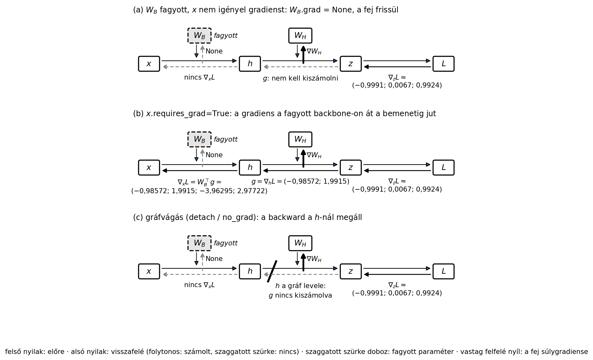

Ebben az alfejezetben azt az üzemmódot vizsgáljuk, amelyben egy már betanított háló nagy részét változatlanul hagyjuk, és csak egy kicsi, feladatspecifikus utolsó réteget tanítunk. Előfeltétel a 12.4. III. ellenőrző pont: önállóan tanuló kis háló tanítási ciklusa, a 17.4. Architektúra összehasonlítása kontrollált keretben kontrollált összehasonlítás szempontjai, a 18.4. Reziduális blokk ablatív vizsgálata ablatív gondolkodásmód és a 19.4. ConvNeXt és a recept/architektúra elválasztása recept/architektúra szétválasztás. Induló becslés: ha egy paraméteres modellből tartozik a backbone-hoz, és azt befagyasztjuk, hány paramétert frissít egy optimizer-lépés? A válasz , de a bufferek kérdése ennél finomabb: a fagyasztás nem állít meg minden állapotváltozást.
Definíció (backbone, feature extractor). Legyen a modell
ahol
a backbone vagy feature extractor,
pedig a head (fej).
és
a két rész súlyparaméterei,
és
a hozzájuk tartozó, nem súly jellegű állapotok
(bufferek, például BatchNorm futó statisztikák).
Batchelt bemenetre
,
a köztes reprezentáció
,
a logit kimenet
.
A reprezentációt itt
-dimenziós
vektorként definiáltuk, de ez nem követeli meg, hogy a backbone globális
átlagolással záruljon: a MiniCNN backbone modulja
alakú térbeli tenzort ad, a forward ezt
-re
lapítja, és a
dimenziós vektor a továbbiakban a reprezentáció.
Definíció (pretrained weights). Egy
súlyvektor akkor előtanított, ha egy dokumentált
korábbi tanítási futtatás végállapotából származik, és most új
inicializálásként töltjük be. A minősítés a tanítási előzményhez és a
betöltési eljáráshoz kötött, nem a fájlformátumhoz: a
weights=None (korábban pretrained=False)
jellel létrehozott háló architektúrája lehet azonos, de súlya véletlen,
így nem előtanított. A torchvision 0.13 óta a pretrained=
argumentum elavult; a támogatott forma a weights= enum
(például ResNet18_Weights.DEFAULT vagy
None).
Definíció (frozen parameter). Egy
paraméter befagyasztott, ha a keretrendszerben
p.requires_grad == False. Ilyenkor a backward a
paraméterhez nem számol új gradienst. Két dolgot ez önmagában
nem biztosít: egy korábban már kiszámolt
p.grad nem törlődik, és a paraméter továbbra is szerepelhet
az optimizer paraméterlistájában. A szokásos PyTorch-optimalizálók a
grad is None paramétereket hagyják ki, nem a
requires_grad zászlót nézik, ezért egy megmaradt régi
gradienssel (vagy momentum- és weight decay-állapottal) a „fagyott” súly
mégis változhat. A befagyasztás ajánlott receptje ezért:
for p in model.backbone.parameters():
p.requires_grad_(False)
p.grad = None # régi gradiens törlése
optimizer = torch.optim.SGD(
[p for p in model.parameters() if p.requires_grad], lr=1e-2) # csak a tanítandókA listából kizárás ajánlott, mert egyértelművé teszi, hogy az
optimizer mely paramétereket frissítheti; a
requires_grad_(False) önmagában nem tiltja meg, hogy a
paramétert felvegyük az optimizer listájára. A befagyasztás a
frissítés tiltása; a forward számításban a fagyott súly
továbbra is aktív.
Definíció (optimizer groups). Az optimalizáló paramétercsoportjai a paraméterek diszjunkt halmazaihoz külön beállítást rendelnek. A fejcserés tanítás tipikus felosztása: az egyik csoport a fej paramétereit tartalmazza a teljes tanulási rátával; a backbone-t nem adjuk át az optimizernek, ezért nincs második csoport. Finomhangolásnál a backbone külön, kisebb rátájú csoportba kerülhet, és a két csoport tanulási rátája, weight decay-je vagy momentuma eltérhet.
A befagyasztás nem azonos az eval() móddal. Ezt a
következő implementációs tényben rögzítjük.
Implementációs tény (befagyasztott backbone
állapotváltozásai). Tekintsük a fenti
modellt. Tegyük fel, hogy minden
-re
requires_grad=False, minden
-ra
requires_grad=True, és az optimizer csak
elemeit kapja meg. Tegyük fel továbbá, hogy a modulokat a hívó vagy
train(), vagy eval() módba állította. Ekkor
egyetlen minibatch-tanítási lépésben:
train() módban
változnak. Minden BatchNorm réteg a momentum-szabályt hajtja
végre a forward alatt:
ahol
a modul momentum paramétere,
és
az aktuális batch statisztikái. A PyTorch-konvenció rögzített: a
normalizálás a torzított,
-nel
osztott batch-varianciát használja, a futó
puffert viszont a torzítatlan,
-gyel
osztott becsléssel frissíti; ez a modulon nem konfigurálható külön. A
num_batches_tracked buffer is növekszik. Ez akkor
is megtörténik, ha a backbone súlyai fagyottak, mert a
bufferfrissítés a forward része, nem autograd-művelet.eval() módban nem
változnak: a réteg a tárolt
értékekkel normalizál.training
attribútuma szerint viselkednek, függetlenül a backbone
fagyasztásától.Indoklás. Az (1)–(2) állítás az autograd gráfépítés és az
optimizer definíciójából következik: a requires_grad=False
tenzor az autograd gráf levele (olyan csomópont, amelyből nem vezet
visszafelé gradiensigénylő út), ezért rá a backward nem számol
gradienst; az optimizer pedig kizárólag a paraméterlistájában szereplő,
requires_grad=True tenzorokat módosítja. A (3)–(4) állítás
a BatchNorm implementált viselkedése: a forwardban a
self.training érték dönti el, hogy a batch statisztikát
vagy a futó statisztikát használja-e, és a futó statisztika frissítése
közvetlen, grafikon kívüli értékadás. A (5) pont ugyanezen szabály
alkalmazása a fejre. Ez implementációs tény a PyTorch 2.x
viselkedéséről, nem analitikus tétel; a momentum-szabály a könyvtár
definíciója. A BatchNorm train/eval megkülönböztetését a 18.2. Batch normalization train és eval módban
vezette be.
A megállapítás gyakorlati konzekvenciája: ha a befagyasztott
backbone-ot train() módban hagyjuk, a súlyok állandóak, de
a normalizálási állapot tovább mozog. Ha a cél a feature extractor
teljes kimerevítése, a backbone moduljait eval() módba kell
tenni, vagy a BatchNorm frissítését külön le kell tiltani.
Legyen a backbone egyetlen affin réteg , a fej , bias nélkül. Legyen
A köztes reprezentáció
A logitok . Legyen a cél ; a softmax valószínűségei
A cross-entropy gradiens a logitson . A fej súlygradiense
a fej biasgradiense ugyanaz a vektor. A köztes reprezentáció
gradiense
.
Ha a backbone nincs befagyasztva,
gradiense
,
egy
mátrix. Ha a backbone fagyott, három esetet kell
elválasztani. (a) Paramétergradiens tiltása:
nem kap gradienst,
None marad; a fej viszont frissül. (b) Bemeneti
gradiens: ha
requires_grad=True, a gradiens a fagyott lineáris
backbone-on át is eljut a bemenetig,
;
a fagyasztás tehát nem vágja el a gráfot. (c) Gráfvágás (a
számítási gráf elvágása, azaz a backward megállása a reprezentációnál):
ha sem
,
sem a backbone súlya nem igényel gradienst (vagy a backbone
torch.no_grad() alatt, illetve detach() után
fut), a
már a gráf levele, a backward a fejnél megáll, és
nem is számolódik ki automatikusan.

None), a fej frissül; (b) ha
igényel gradienst,
átmegy a fagyott rétegen; (c) detach/no_grad
esetén a backward a
reprezentációnál megáll. A számok a kézi példából:
,
.# lab/n077/manual_check.py
import torch
dtype = torch.float64
x = torch.tensor([2.0, 1.0, -1.0, 1.0], dtype=dtype)
WB = torch.tensor([[1.0, 0.0, 2.0, -1.0],
[0.0, 1.0, -1.0, 1.0]], dtype=dtype)
WH = torch.tensor([[1.0, -1.0],
[2.0, 0.0],
[0.0, 1.0]], dtype=dtype, requires_grad=True)
y = torch.tensor(0)
def forward(wb, wh, freeze_backbone):
wb = wb.detach()
wb.requires_grad_(not freeze_backbone)
h = wb @ x
z = wh @ h
loss = torch.nn.functional.cross_entropy(z.unsqueeze(0), y.unsqueeze(0))
loss.backward()
return h.detach(), loss.detach(), wb.grad, wh.grad
# Nem fagyasztott eset: mindkét gradiens létezik
h0, loss0, gWB0, gWH0 = forward(WB, WH.clone().detach().requires_grad_(True), False)
# Fagyasztott eset: csak a fej gradiense létezik
h1, loss1, gWB1, gWH1 = forward(WB, WH.clone().detach().requires_grad_(True), True)
assert torch.allclose(h0, torch.tensor([-1.0, 3.0], dtype=dtype), atol=1e-12)
assert torch.allclose(loss0, loss1, atol=1e-12)
p = torch.softmax(WH.detach() @ h0, dim=0)
g_h = WH.detach().T @ (p - torch.nn.functional.one_hot(y, 3).to(dtype))
expected_gWB = torch.outer(g_h, x)
assert gWB0 is not None
torch.testing.assert_close(gWB0, expected_gWB, rtol=1e-10, atol=1e-12)
# A pontos analitikus és autograd-gradiens alakja:
assert gWB0.shape == (2, 4) and gWB1 is None
assert gWH1 is not None and torch.allclose(gWH1, gWH0, atol=1e-12)
print("manual_check ok: frozen backbone -> WB.grad is None, WH.grad kept")
# (b) Fagyott backbone, de a bemenet gradienst igényel: a gradiens eljut x-ig.
xb = x.clone().requires_grad_(True)
zb = WH.detach() @ (WB @ xb)
torch.nn.functional.cross_entropy(zb.unsqueeze(0), y.unsqueeze(0)).backward()
torch.testing.assert_close(xb.grad, WB.T @ g_h, rtol=1e-10, atol=1e-12)
print("g_h =", [round(v, 5) for v in g_h.tolist()], " x.grad =", [round(v, 5) for v in xb.grad.tolist()])
# Ellenpélda: requires_grad_(False) után a régi .grad megmarad, és step() frissít.
w = torch.nn.Parameter(torch.tensor([1.0], dtype=dtype))
(w * 3.0).sum().backward() # w.grad = 3
w.requires_grad_(False) # "fagyasztás", de a grad nem törlődik
opt = torch.optim.SGD([w], lr=0.1)
opt.step()
print("fagyott w a step után:", w.item()) # 0.7: mégis változott
w.grad = None
opt.step()
assert abs(w.item() - 0.7) < 1e-12 # grad=None mellett már nem változikA kód futtatható a lab/n077 munkakönyvtárból:
python manual_check.py. A futtatás kimenete (Python 3.12.3,
torch 2.15.0+cpu, CPU, torch.get_num_threads()=10,
seed=0):
manual_check ok: frozen backbone -> WB.grad is None, WH.grad kept
g_h = [-0.98572, 1.9915] x.grad = [-0.98572, 1.9915, -3.96295, 2.97722]
fagyott w a step után: 0.7A három sor a kézi levezetéssel egyező g_h és
x.grad értéket, valamint a fagyasztás utáni
step() viselkedését rögzíti.
Előfeltétel. Python 3.12 és a cnn-labor
csomag rögzített környezete (uv sync: NumPy 2.3.5, PyTorch
2.14.1+cpu; a közölt kimenetek a könyv ellenőrző környezetéből, NumPy
2.5.4 és PyTorch 2.15.0+cpu alatt készültek), CPU; a labor a szakasz
kódját használja, a szükséges csomagokat a laborcsomag rögzített
környezete biztosítja. Bemenet a GlyphLab
lab/data/images.npy, labels.npy és
metadata.csv fájlja; a head_swap_lab.py a
lab/n077/ munkakönyvtárból futtatható
(python head_swap_lab.py), a két fázis egy futásban
dolgozik.
A labor két fázisból áll. Először egy kis GlyphLab-CNN-t tanítunk 3
osztályra (az adat szerződését a függelék A. A
GlyphLab adatkészlet szakasza rögzíti), és a teljes
state_dict-et elmentjük [D09]. Az adat a
lab/data/ könyvtárban van: images.npy float32
,
intenzitás; labels.npy int64
;
metadata.csv pedig
index,scene_id,view_id,label,split,xmin,ymin,xmax,ymax
oszlopokkal. A scene_id a jelenetet azonosítja;
jelenetenként két nézet tartozik ugyanahhoz a jelenethez, ezért a split
és minden csoportosított kiértékelés jelenetszintű. A labor csak az
index és a split oszlopot használja, a hiányzó
adatfájlra pedig érthető FileNotFoundError-t ad. A
MiniCNN konstruktora nem vesz át weights vagy
pretrained argumentumot: az itt betöltött állapot a saját
korábbi tanítás state_dict-je, nem külső előtanított súly.
Másodszor a mentett modellt betöltjük, a fejet újra inicializáljuk, a
backbone-ot befagyasztjuk, és ellenőrizzük, hogy a fenti állítás minden
pontja teljesül. Ez nem valódi transzfer: az adat és a
feladat ugyanaz marad, csak a frissítési mechanizmust gyakoroljuk.
Valódi transzferhez dokumentált külső súlyazonosító és az adott súly
preprocessing-szerződése szükséges; a [D13] katalógus konkrét elemeit a
használat előtt ellenőrizni kell.
# lab/n077/head_swap_lab.py
import random
from pathlib import Path
import numpy as np
import torch
import torch.nn as nn
SEED = 20261020
LR = 1e-3
EPOCHS = 8
BASE = Path(__file__).resolve().parent # lab/n077
DATA = BASE.parent / "data" # a közös GlyphLab adat: lab/data
CKPT = BASE / "mini_cnn_3class.pt" # a labor saját kimenete
random.seed(SEED)
np.random.seed(SEED)
torch.manual_seed(SEED)
class Block(nn.Module):
def __init__(self, cin, cout):
super().__init__()
self.conv = nn.Conv2d(cin, cout, 3, padding=1)
self.bn = nn.BatchNorm2d(cout)
self.act = nn.ReLU()
self.pool = nn.MaxPool2d(2)
def forward(self, x):
return self.pool(self.act(self.bn(self.conv(x))))
class MiniCNN(nn.Module):
def __init__(self, num_classes=3):
super().__init__()
self.backbone = nn.Sequential(Block(1, 16), Block(16, 32))
self.head = nn.Linear(32 * 6 * 6, num_classes)
def forward(self, x):
h = self.backbone(x).flatten(1)
return self.head(h)
def load_glyphlab():
for name in ("images.npy", "labels.npy", "metadata.csv"):
if not (DATA / name).exists():
raise FileNotFoundError(
f"hiányzó GlyphLab adatfájl: {DATA / name}; "
"a függelék A. szakasza szerinti data/ könyvtár kell")
X = np.load(DATA / "images.npy").astype(np.float32)
y = np.load(DATA / "labels.npy").astype(np.int64)
meta = np.genfromtxt(DATA / "metadata.csv", delimiter=",", dtype=None,
names=True, encoding="utf-8")
if X.shape != (len(y), 1, 24, 24):
raise ValueError(f"várt képalak ({len(y)},1,24,24), kapott: {X.shape}")
if not (len(meta) == len(X) == len(y)):
raise ValueError("a metadata.csv és a tömbök hossza eltér")
idx = meta["index"].astype(np.int64)
if not np.array_equal(np.sort(idx), np.arange(len(X))):
raise ValueError("a metadata.csv index oszlopa nem permutációja a tömbindexeknek")
split = np.asarray(meta["split"]).astype(str)
train_idx = idx[split == "train"]
val_idx = idx[split == "val"]
return X, y, train_idx, val_idx
def train_mini_cnn():
X, y, tr, va = load_glyphlab()
model = MiniCNN()
opt = torch.optim.Adam(model.parameters(), lr=LR)
lossf = nn.CrossEntropyLoss()
Xtr = torch.from_numpy(X[tr]); ytr = torch.from_numpy(y[tr])
for ep in range(EPOCHS):
model.train()
# A train sorok osztály szerint rendezettek: keverés nélkül a batchek
# egyosztályúak lennének. Epochonként rögzített generátoros keverés.
g = torch.Generator().manual_seed(SEED + ep)
order = torch.randperm(len(tr), generator=g)
for i in range(0, len(tr), 32):
xb, yb = Xtr[order[i:i+32]], ytr[order[i:i+32]]
opt.zero_grad()
loss = lossf(model(xb), yb)
loss.backward()
opt.step()
model.eval()
with torch.no_grad():
val_acc = (model(torch.from_numpy(X[va])).argmax(1)
== torch.from_numpy(y[va])).float().mean().item()
print(f"checkpoint val_acc: {val_acc:.4f} (véletlen szint: 0.3333)")
torch.save(model.state_dict(), CKPT)
return model
def head_swap_probe():
sd = torch.load(CKPT, weights_only=True)
model = MiniCNN()
model.load_state_dict(sd) # teljes modell, 3 osztályos fej is
# Fejcsere: a fejet újra inicializáljuk, a backbone súlyát megtartjuk.
model.head = nn.Linear(32 * 6 * 6, 3)
model.head.weight.data.normal_(0, 0.02)
model.head.bias.data.zero_()
# Backbone befagyasztás, optimizer csak a fejet látja.
model.backbone.requires_grad_(False)
opt = torch.optim.Adam(model.head.parameters(), lr=LR)
print("optimizer param_groups:", len(opt.param_groups))
print("trainable params:", sum(p.numel() for p in model.parameters() if p.requires_grad))
# Buffer-kontroll: BatchNorm train módban frissül, eval módban nem.
bn = model.backbone[0].bn
bn.eval(); before = bn.running_mean.clone()
_ = model.backbone(torch.zeros(1, 1, 24, 24))
assert torch.equal(bn.running_mean, before), "eval mode: running buffer must not change"
bn.train(); before = bn.running_mean.clone()
_ = model.backbone(torch.zeros(1, 1, 24, 24))
assert not torch.equal(bn.running_mean, before), "train mode: running buffer must change"
# Gradiens-kontroll egyetlen lépésen; a befagyasztott backbone eval módban marad.
model.train()
model.backbone.eval()
xb = torch.zeros(2, 1, 24, 24); yb = torch.tensor([0, 1])
opt.zero_grad(); loss = nn.functional.cross_entropy(model(xb), yb); loss.backward()
assert model.backbone[0].conv.weight.grad is None
assert model.head.weight.grad is not None
print("head_swap_probe ok: backbone frozen, head gradient exists, buffer rule verified")
if __name__ == "__main__":
if not CKPT.exists():
train_mini_cnn()
head_swap_probe()Futtatási parancs a lab/n077 könyvtárból:
python head_swap_lab.py. A kód ezen a környezeten lefutott:
Python 3.12, NumPy 2.3.5, torch 2.14.1, CPU,
OMP_NUM_THREADS=1, seed 20261020 (más szálszámmal a
pontosság utolsó jegyei eltérhetnek). A mért kimenet:
checkpoint val_acc: 0.9000 (véletlen szint: 0.3333)
optimizer param_groups: 1
trainable params: 3459
head_swap_probe ok: backbone frozen, head gradient exists, buffer rule verifiedAz első sor azt mutatja, hogy a fejcsere kiinduló checkpointja
valóban tanult (a validáción
,
a véletlen szint
):
keverés nélkül a train sorok osztály szerinti rendezése miatt a batchek
egyosztályúak lennének, és a háló az utolsó osztály felé torzulna. A
négy invariánst a kód assert-jei is ellenőrzik (eval módban
a futó buffer változatlan, train módban változik; a backbone konvolúciós
súlyának gradiense None, a fejé nem); a veszteségértékektől
függetlenül ezek a labor kontrollpontjai.
A fenti labor szándékosan külső súly nélkül fut. A valódi előtanított
modell (ResNet-18 [P06]) használata ugyanazt a láncot követi, négy
kiegészítő lépéssel: (1) a weights enum kiválasztása, (2) a
csomaghoz tartozó transzformáció használata, (3) az 1 csatornás
GlyphLab-kép RGB-vé illesztése, (4) fejcsere és fagyasztás. Ez a
kód a súlyok letöltését igényli (hálózat), ezért itt nem futott; a
hallgató a saját környezetében futtatja, és a súlycsomag licencét,
valamint a weights.meta által elérhető metaadatokat a
futásnaplóba rögzíti. A weights.meta nem garantáltan
tartalmaz licencmezőt, ezért a licencet a modell oldalán is ellenőrizni
kell.
# lab/n077/pretrained_torchvision.py (letöltést igényel; nem futtatott)
import torch, torch.nn as nn
from torchvision.models import resnet18, ResNet18_Weights
weights = ResNet18_Weights.DEFAULT # (1) enum: verziózott súlycsomag
model = resnet18(weights=weights)
preprocess = weights.transforms() # (2) resize + crop + normalizálás a csomag szerint
for p in model.parameters(): # (4) a törzs fagyasztása
p.requires_grad_(False)
model.fc = nn.Linear(model.fc.in_features, 3) # új fej: 512 -> 3 (alapból requires_grad=True)
def to_model_input(x_gray): # x_gray: (N,1,24,24) float32, [0,1]
x_rgb = x_gray.repeat(1, 3, 1, 1) # (3) 1 csatorna -> 3 csatorna
return preprocess(x_rgb) # (N,3,224,224), ImageNet-normalizált
trainable = [p for p in model.parameters() if p.requires_grad]
assert len(trainable) == 2 # csak fc.weight és fc.bias
opt = torch.optim.SGD(trainable, lr=1e-2)
model.eval() # a BatchNorm-statisztikák fagyasztva maradnakA weights.transforms() a ResNet18-súlyokhoz tartozó
transzformáció [D13]: a rövidebb oldalt 256-ra méretezi, 224×224-es
középső kivágást végez, majd az ImageNet mean/std-del normalizál. A
24×24-es szürke képet előbb három csatornán ismételjük, így a háló
bemenete
.
Az új fej
paramétert tartalmaz, és a len(trainable) == 2 assert éppen
a fej két tenzorát ellenőrzi.
A model.eval() itt a fagyasztott törzs
BatchNorm-futóstatisztikái miatt kell; a fej tanítása közben a backbone
marad eval() módban. A Linear rétegnek nincs
train/eval-viselkedése, ezért a fej módja önmagában nem befolyásolja a
kimenetet. Az előtanított modell ImageNet-eloszláson tanult, a GlyphLab
szintetikus: az eredmény csak a helyi splitre vonatkozik, és a
domain-eltolódás miatt nem általánosítható.
F1 (fogalmi, nehézség 1). Mi a különbség a
weights=ResNet18_Weights.DEFAULT és a
weights=None konstruktor-argumentum közt (a torchvision
0.13 óta a pretrained= argumentum elavult) egy olyan
keretben, ahol az előbbi súlybetöltést indít el? Melyik esetben
beszélhetünk transzfertanulásról, és miért?
F2 (levezetési, nehézség 2). A fenti állításban a
backbone BatchNorm bufferei train() módban frissülnek,
hiába fagyottak a súlyok. Bizonyítsa be ezt az állítást a
momentum-szabályból: adja meg
képletét, és mutassa meg, hogy
akkor is változhat, ha
egyetlen eleme sem változik.
F3 (implementációs, nehézség 2). Írjon
freeze_by_prefix(model, prefix) függvényt, amely minden
olyan paramétert befagyaszt, amelynek neve prefix-szel
kezdődik, és adja vissza a megmaradt tanítható paraméterek listáját.
Tesztelje egy nn.Sequential-be ágyazott
Linear(4,3) + Linear(3,2) modellen; az elvárt
kimenet: csak a második réteg paraméterei taníthatók.
F4 (hibakeresési, nehézség 2). Egy fejlesztő az alábbi pszeudokódot használja befagyasztott backbone-hoz, de az eval metrika a fej tanítása közben romlik, noha a training loss csökken. Mi a hibás feltevés, mi a következménye, és mi a két lehetséges javítás?
model.backbone.requires_grad_(False)
optimizer = Adam(model.head.parameters(), lr=1e-3)
for xb, yb in train_loader: # a DataLoader nem állít módot
model.train() # az egész modellt train módba teszi
loss = CE(model(xb), yb)
loss.backward(); optimizer.step()
# később: model.eval(); eval_metrics(model, val_loader)F5 (kísérlettervezési, nehézség 3). Tervezzen
fejcsere-kísérletet a GlyphLab adaton: a 3-osztályos CNN backbone-ját
fagyaszd be, és cseréld a fejet bináris feladatra, ahol az egyik osztály
vertical, a másik a horizontal és
diagonal egyesítése. Adja meg a megfigyelési egységet, a
split szabályt, a baseline-t, a metrikát és a következtetési korlátot.
Miért nem tekinthető ez külső domainre történő transzfernek? A beadandó
terv kötelező elemei: hipotézis, a változó tényező, kontroll (baseline),
metrika és megfigyelési egység, a seedek száma és konkrét értékei,
számszerű döntési szabály, valamint erőforráskeret.
F1. A weights=ResNet18_Weights.DEFAULT
(korábbi nevén pretrained=True) egy dokumentált korábbi
tanításból származó súlyt tölt be; a weights=None (korábban
pretrained=False) véletlen inicializálást ad.
Transzfertanulásról csak az előbbi esetben beszélhetünk, mert a tanult
reprezentáció átvitele a korábbi súlyokból indul. A False
esetben a háló architektúrája lehet azonos, de a súlyokban nincs korábbi
tudás. A gyakorlatban a logikai kapcsoló mellett a súlyfájl forrását és
a preprocessinget is dokumentálni kell.
F2. A momentum-szabály definíció szerint
Ha és , akkor a különbség . A jobb oldal egyetlen tényezője sem függ elemeinek gradiensétől: a forward kimenet és a batch statisztika a fagyott súlyokkal számolódik, de a bufferfrissítés maga közvetlen értékadás. Tehát változhat, miközben változatlan. Ugyanez a levezetés érvényes -re.
F3. Egy teljes megoldás:
def freeze_by_prefix(model, prefix):
trainable = []
for name, p in model.named_parameters():
matches = prefix == "" or name == prefix or name.startswith(prefix + ".")
if matches:
p.requires_grad_(False)
elif p.requires_grad:
trainable.append((name, p))
return trainable
m = nn.Sequential(nn.Linear(4, 3), nn.Linear(3, 2))
for n, p in m.named_parameters():
assert p.requires_grad
tr = freeze_by_prefix(m, "0")
assert len(tr) == 2 # a második réteg weight és bias
assert not m[0].weight.requires_grad
assert m[1].weight.requires_gradA névillesztést a prefix + "." határral végezzük (üres
prefixnél minden név), mert a puszta startswith(prefix) a
0 prefixszel a 10.weight nevet is
befagyasztaná. Alakellenőrzés: a lista elemei
(str, Parameter) párok; a befagyasztott réteg paraméterei
requires_grad=False értékűek. Szélsőeset: ha
prefix üres, minden befagy; ha egyetlen név sem
illeszkedik, a lista az összes tanítható paramétert visszaadja.
F4. A hibás feltevés az, hogy a
requires_grad_(False) a BatchNorm futó statisztikáit is
leállítja. A model.train() az egész modult train módba
teszi, így a backbone BatchNorm rétegei a kis minibatch statisztikákkal
frissítik a running_mean és running_var
puffereket, noha a súlyaikat nem tanítjuk. Következmény: az eval során a
modell olyan normalizálási állapotot használ, amely a legutóbbi
mini-batchekhez idomult, ezért a valós kiértékelés romolhat. Két
javítás: (1) a backbone moduljait külön eval() módba
tesszük, a fejet train() módban hagyjuk; vagy (2) ha a
backbone többi részét train módban kell tartani, kifejezetten a backbone
BatchNorm rétegeit állítjuk eval() módba. A
momentum=None nem tiltja le a frissítést, hanem kumulatív
átlagra vált, a track_running_stats=False pedig eval módban
is batch-statisztikát használ; ezért ezek nem a futó statisztika
kimerevítésének helyes eszközei, hanem a modell viselkedését
változtatják meg.
F5. Egy lehetséges terv. A GlyphLab 180 jelenet × 2
nézet = 360 kép, 24×24-es, egycsatornás, három osztállyal; a
scene_id a jelenetet azonosítja. Protokoll: a bináris címke
legyen
a vertical,
a horizontal+diagonal egyesítésre. A
megfigyelési egység scene_id; a split a GlyphLab meglévő
felosztását tartja, és mindkét view ugyanabba a részbe kerül. A
3-osztályos CNN mini_cnn_3class.pt súlyát betöltjük, a
fejet Linear(1152,1) logisztikus rétegre cseréljük, a
backbone-ot befagyasztjuk. Veszteség: BCEWithLogitsLoss a
fej egyetlen logitján. Baseline: a tanítóbeli többségi osztály aránya,
valamint a befagyasztott backbone feature-ein tanított logisztikus
regresszió. Metrika: balanced accuracy, mert az egyesítés osztályaránya
eltolódhat. A fejet a val spliten választjuk, a testet egyszer
értékeljük. Korlát: az adat ugyanabból a generátorból származik, tehát
ez feladatváltás, nem domain-transzfer; a mérés nem állít semmit külső
eloszláson való használhatóságról.
Kötelező elemek kiegészítve. Seedek: 20261020, 20261021,
20261022 (minden karra azonosak). Döntési szabály (előre rögzítve): a
kezelt változatot csak akkor tekintjük jobbnak, ha az elsődleges metrika
seedenként párosított különbségének jelenetszintű bootstrap 95%-os
intervalluma
(,
np.random.default_rng(0)) teljesen a javulás oldalán van;
különben nem állítunk különbséget. Erőforráskeret: CPU, 1 szál,
float32; a futások számát (karok × seedek) és az
epochszámot a terv rögzíti, a tényleges futásidőt a napló méri.
Gyakori tévedés, hogy a weights=None háló (korábbi nevén
pretrained=False) „mégis transzfer, mert az architektúra
ismert”. Ez nem következik. Példa: hozzunk létre két
MiniCNN példányt azonos magból, az egyiket tanítsuk 3
osztályra, a másikat hagyjuk véletlen súlyokkal. A második betöltése
nélkül a fejcserés tanítás nem indul tanult reprezentációból, így az
eredmény nem transzferbizonyíték. A transzfer állításához legalább a
betöltött súlyfájl forrását, a tanítási előzményt és a betöltés utáni
súly-egyezés ellenőrzését kell felmutatni.
Ellenőrizze: (1) a fagyott paraméter requires_grad
értéke mindenütt False-e; (2) a backbone BatchNorm
train/eval módja tudatosan választott-e; (3) az optimizer
paramétercsoportja csak a tanítandó paramétereket tartalmazza-e; (4) a
betöltött state_dict kulcsai illeszkednek-e az
architektúrához. Korábbi fogalom: a 16.1. Eltolási
equivariance és invariance alfejezetben bizonyított eltolási
equivariancia a backbone belső tartományán megmarad a fejcserénél, mert
változatlan; a 19.1. Depthwise separable és
pointwise réteg alfejezetből ismert paraméter/MAC arány sem változik
a backbone-ban. A 8.1. Kockázat, mintavétel és
baseline alfejezetből pedig azt használjuk, hogy a tanító adaton
mért fejeredmény nem általánosít automatikusan más eloszlásra.
A feature extractor vagy backbone a bemenetet fix dimenziós reprezentációba képezi, a head pedig erre a reprezentációra épít feladatspecifikus kimenetet. Előtanított súlynak csak dokumentált korábbi tanításból betöltött súly nevezhető. A befagyasztás a gradiens és az optimizer-frissítés tiltása; ettől függetlenül a BatchNorm futó statisztikák train módban tovább mozognak, ezért a befagyasztott backbone-ot általában eval módba tesszük. A labor helyi GlyphLab-CNN-t tanít keveréssel (a checkpoint validációs pontossága ), majd fejet cserél, és négy invariánssal ellenőrzi a mechanizmust: egyetlen optimizer-paramétercsoport, 3459 tanítható paraméter, nulla backbone-gradiens, és a BatchNorm-puffer csak train módban frissül. Valódi transzferhez ellenőrzött külső súlyazonosító és preprocessing-szerződés szükséges.
A 20.2. Finomhangolás és tanulási ráta a finomhangolást tárgyalja: ott a backbone egy részét felengedjük, és a fejnél kisebb tanulási rátával tanítjuk együtt. Az itteni optimizer groups és a bufferleltár lesz a finomhangolás ütemezésének alapja.